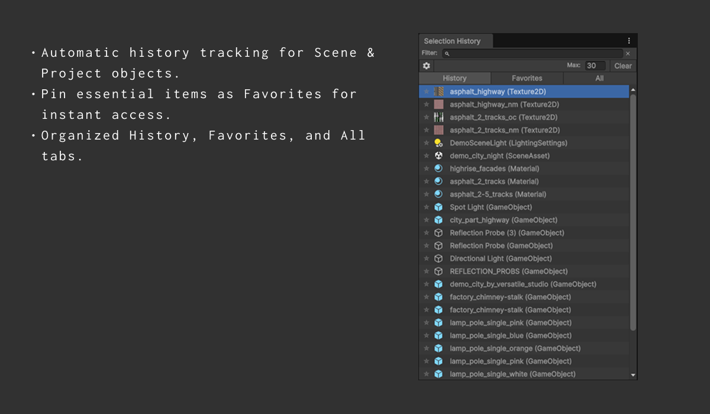

Stop Wasting Time Refinding Objects
FlowRecall is a powerful, dockable Unity Editor window that remembers your GameObject & Asset selection history, letting you focus on your workflow.
Get FlowRecall on the Asset StoreCurrent Version: 1.0.0
The Problem vs. The Solution
Frustration
Constantly switching between Scene and Project views? Select an object, get distracted, and waste precious minutes trying to find it again? This context-switching friction slows you down.
FlowRecall
FlowRecall acts like your editor's short-term memory. It automatically logs selections, providing an instant, filterable list to jump back to exactly what you need, keeping you in the flow.
Key Features
Automatic History
Seamlessly tracks GameObject and Asset selections.
Favorites/Pinning
Pin crucial items for permanent, quick access (persists restarts).
Filtering & Search
Instantly find items by name, type, or path. Tabs for History/Favorites.
Context Actions
Right-click for Select, Ping, Open, Duplicate, Delete, Copy Path/GUID & more.
Drag & Drop
Drag items directly from history to the scene or Inspector fields.
Customizable UI
Adjust history size, display density (Small/Medium), and behavior.
See it in Action
Replace these placeholder images with your actual screenshots!
Get Started Easily
- Download: Get the package from the Unity Asset Store.
- Import: Use `Assets -> Import Package -> Custom Package...` in Unity.
- Open: Find the window via `Window -> FlowRecall -> Selection History`.
- Dock & Use: Dock it anywhere and start selecting!
Ready to Improve Your Workflow?
Stop losing your place and start working faster with FlowRecall.
View on Unity Asset Store